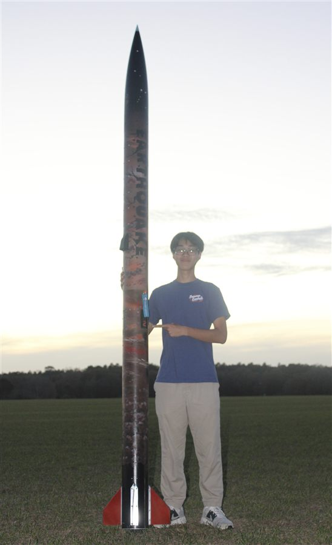

03 — projects & papers

I’m Yim from Thailand, and I’m a fourth-year Aerospace Engineering student in the Honors Program at the University of Florida.
I grew up near the Geo-Informatics and Space Technology Development Agency (GISTDA) in Thailand, and I often visited their museum growing up. Those visits sparked my interest in space and eventually led me to become fascinated with satellites.
My current research interests are broadly focused on CubeSats and spacecraft systems, including areas such as attitude determination and control (ADCS), guidance, navigation, and control (GNC), formation flying, and nonlinear control. I have experience in nonlinear control research at NCR and spent two years as a Software and GNC Lead on the Swamp Launch rocket team. I am also currently working on my undergraduate honors thesis on Hybrid Control Moment Gyroscope (HCMG) momentum desaturation. I’m interested in exploring different areas of CubeSat research and learning more about the challenges involved in controlling and operating small spacecraft.